Warning: 4000 of 4000 (100.0%) transitions hit the maximum treedepth limit of 10.
See https://mc-stan.org/misc/warnings for details.Warning: 2 of 10 chains had an E-BFMI less than 0.2.
See https://mc-stan.org/misc/warnings for details.Warning: pojawiły się wartości NA na skutek przekształcenia
Warning: pojawiły się wartości NA na skutek przekształcenia variable mean median sd mad q5 q95 rhat ess_bulk ess_tail
logkwHat1 3.23 3.23 0.09 0.09 3.09 3.38 1.00 1658 2829
logkwHat2 3.82 3.81 0.10 0.10 3.66 3.98 1.02 466 1977
S1mHat1 4.42 4.42 0.09 0.09 4.26 4.58 1.01 1100 2437
S1mHat2 5.00 5.00 0.10 0.10 4.82 5.17 1.01 1346 1920
S1aHat1 5.42 5.42 0.13 0.13 5.20 5.64 1.01 989 2251
S1aHat2 5.79 5.79 0.13 0.14 5.58 6.01 1.00 1367 1841
dlogkwHat1[1] -0.74 -0.74 0.06 0.06 -0.85 -0.65 1.01 811 1765
dlogkwHat1[2] -0.98 -0.98 0.05 0.05 -1.06 -0.91 1.02 662 2064
dlogkwHat2[1] -0.81 -0.81 0.07 0.07 -0.92 -0.70 1.01 713 1256
dlogkwHat2[2] -1.01 -1.01 0.05 0.05 -1.09 -0.93 1.02 439 2169
dSmHat1[1] 0.26 0.26 0.10 0.10 0.09 0.42 1.07 106 416
dSmHat1[2] -0.05 -0.05 0.07 0.07 -0.17 0.06 1.07 124 567
dSmHat2[1] 0.02 0.02 0.11 0.11 -0.14 0.20 1.11 72 436
dSmHat2[2] 0.25 0.25 0.08 0.08 0.12 0.38 1.08 105 421
dSaHat1[1] 0.79 0.79 0.10 0.10 0.63 0.96 1.06 117 254
dSaHat1[2] -0.57 -0.57 0.07 0.07 -0.68 -0.46 1.06 149 677
dSaHat2[1] 0.50 0.50 0.10 0.10 0.33 0.66 1.09 84 380
dSaHat2[2] -0.10 -0.10 0.08 0.08 -0.23 0.03 1.10 89 352
S2mHat1 0.49 0.49 0.03 0.03 0.44 0.54 1.08 96 405
S2mHat2 0.72 0.72 0.04 0.04 0.65 0.78 1.14 58 263
S2aHat1 0.98 0.98 0.04 0.04 0.91 1.04 1.08 85 487
S2aHat2 1.49 1.49 0.06 0.06 1.39 1.59 1.13 60 271
beta1[1] 0.77 0.77 0.03 0.03 0.72 0.83 1.00 1765 3303
beta1[2] 0.42 0.42 0.04 0.04 0.36 0.48 1.01 670 2264
beta1[3] 0.46 0.46 0.05 0.05 0.38 0.54 1.01 1029 2699
beta2[1] 0.81 0.81 0.04 0.04 0.75 0.87 1.02 823 2373
beta2[2] 0.46 0.46 0.05 0.05 0.39 0.54 1.04 348 1557
beta2[3] 0.51 0.51 0.05 0.05 0.42 0.59 1.03 459 1816
alphaAHat1[1] 2.01 2.01 0.17 0.17 1.73 2.29 1.01 1111 1714
alphaAHat1[2] 2.09 2.09 0.20 0.20 1.76 2.41 1.00 2106 2551
alphaAHat2[1] 2.01 2.01 0.17 0.17 1.73 2.28 1.00 1278 1940
alphaAHat2[2] 2.15 2.16 0.20 0.19 1.82 2.47 1.00 2907 3080
alphaBHat1[1] -1.03 -1.03 0.14 0.14 -1.26 -0.80 1.02 673 1328
alphaBHat1[2] -0.94 -0.94 0.18 0.19 -1.24 -0.64 1.01 931 1678
alphaBHat2[1] -1.09 -1.09 0.14 0.14 -1.32 -0.87 1.01 938 1674
alphaBHat2[2] -1.09 -1.09 0.17 0.17 -1.38 -0.81 1.01 1165 2045
dlogkTHat1 -0.09 -0.09 0.00 0.00 -0.10 -0.09 1.00 5702 3339
dlogkTHat2 -0.11 -0.11 0.00 0.00 -0.11 -0.10 1.00 6261 3039
omegadlogkT1 0.03 0.03 0.00 0.00 0.03 0.04 1.00 4677 3072
omegadlogkT2 0.04 0.04 0.00 0.00 0.03 0.04 1.00 3974 3356
apH1[1] -0.02 -0.02 0.00 0.00 -0.03 -0.02 1.00 3810 3855
apH1[2] 0.09 0.09 0.00 0.00 0.08 0.09 1.01 1972 3445
apH2[1] -0.04 -0.04 0.00 0.00 -0.04 -0.04 1.00 1931 3436
apH2[2] 0.05 0.05 0.00 0.00 0.05 0.05 1.00 3526 3595
msigma1 0.36 0.36 0.03 0.03 0.32 0.41 1.00 8393 3114
msigma2 0.49 0.49 0.03 0.03 0.44 0.55 1.00 7531 2868
ssigma1 1.00 1.00 0.05 0.05 0.92 1.09 1.00 7029 2791
ssigma2 0.88 0.88 0.05 0.05 0.80 0.96 1.00 8147 2613
omega1[1] 0.64 0.64 0.04 0.04 0.58 0.71 1.00 1679 2327
omega1[2] 0.69 0.68 0.05 0.05 0.61 0.77 1.01 1307 2013
omega1[3] 0.91 0.91 0.06 0.06 0.82 1.02 1.00 1375 2414
omega2[1] 0.69 0.69 0.05 0.05 0.62 0.77 1.01 1169 2671
omega2[2] 0.70 0.70 0.05 0.05 0.62 0.79 1.01 1381 2519
omega2[3] 0.88 0.88 0.06 0.06 0.79 0.99 1.00 1762 2529
rho11[1,1] 1.00 1.00 0.00 0.00 1.00 1.00 NA NA NA
rho11[2,1] 0.83 0.83 0.03 0.03 0.77 0.88 1.01 804 2137
rho11[3,1] 0.76 0.76 0.04 0.04 0.69 0.82 1.01 1138 2453
rho11[1,2] 0.83 0.83 0.03 0.03 0.77 0.88 1.01 804 2137
rho11[2,2] 1.00 1.00 0.00 0.00 1.00 1.00 NA NA NA
rho11[3,2] 0.93 0.93 0.01 0.01 0.90 0.95 1.01 1777 2822
rho11[1,3] 0.76 0.76 0.04 0.04 0.69 0.82 1.01 1138 2453
rho11[2,3] 0.93 0.93 0.01 0.01 0.90 0.95 1.01 1777 2822
rho11[3,3] 1.00 1.00 0.00 0.00 1.00 1.00 NA NA NA
rho12[1,1] 1.00 1.00 0.00 0.00 1.00 1.00 NA NA NA
rho12[2,1] 0.78 0.78 0.04 0.04 0.71 0.84 1.02 450 2337
rho12[3,1] 0.77 0.77 0.04 0.04 0.70 0.83 1.02 748 2386
rho12[1,2] 0.78 0.78 0.04 0.04 0.71 0.84 1.02 450 2337
rho12[2,2] 1.00 1.00 0.00 0.00 1.00 1.00 NA NA NA
rho12[3,2] 0.89 0.89 0.02 0.02 0.85 0.92 1.01 1285 2582
rho12[1,3] 0.77 0.77 0.04 0.04 0.70 0.83 1.02 748 2386
rho12[2,3] 0.89 0.89 0.02 0.02 0.85 0.92 1.01 1285 2582
rho12[3,3] 1.00 1.00 0.00 0.00 1.00 1.00 NA NA NA
L2[1,1] 1.00 1.00 0.00 0.00 1.00 1.00 NA NA NA
L2[2,1] 0.93 0.93 0.01 0.01 0.91 0.95 1.02 643 1252
L2[1,2] 0.00 0.00 0.00 0.00 0.00 0.00 NA NA NA
L2[2,2] 0.36 0.36 0.03 0.03 0.31 0.42 1.02 643 1252
kappa1[1] 0.54 0.53 0.03 0.03 0.49 0.59 1.01 420 676
kappa1[2] 0.50 0.50 0.04 0.04 0.44 0.56 1.06 128 445
kappa1[3] 0.50 0.50 0.04 0.04 0.43 0.57 1.08 96 366
kappa2[1] 0.56 0.56 0.03 0.03 0.51 0.62 1.03 445 905
kappa2[2] 0.51 0.51 0.05 0.05 0.44 0.59 1.08 87 186
kappa2[3] 0.45 0.45 0.05 0.04 0.38 0.53 1.09 83 237
tau[1] 2.36 2.35 0.14 0.14 2.13 2.60 1.10 72 286
tau[2] 3.18 3.17 0.18 0.18 2.89 3.50 1.05 173 1061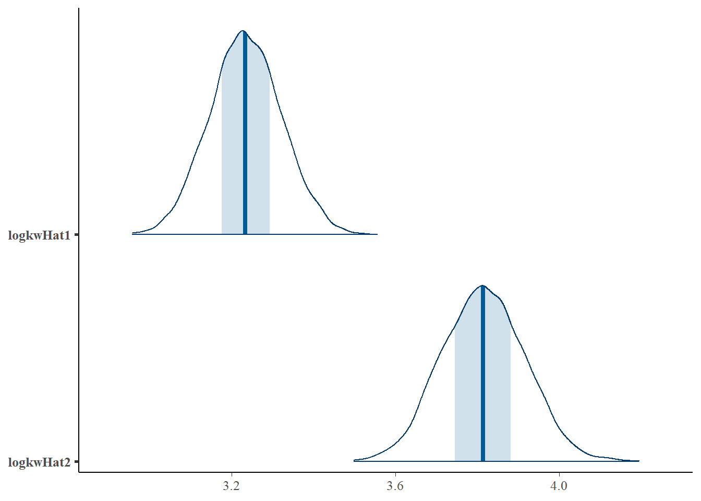
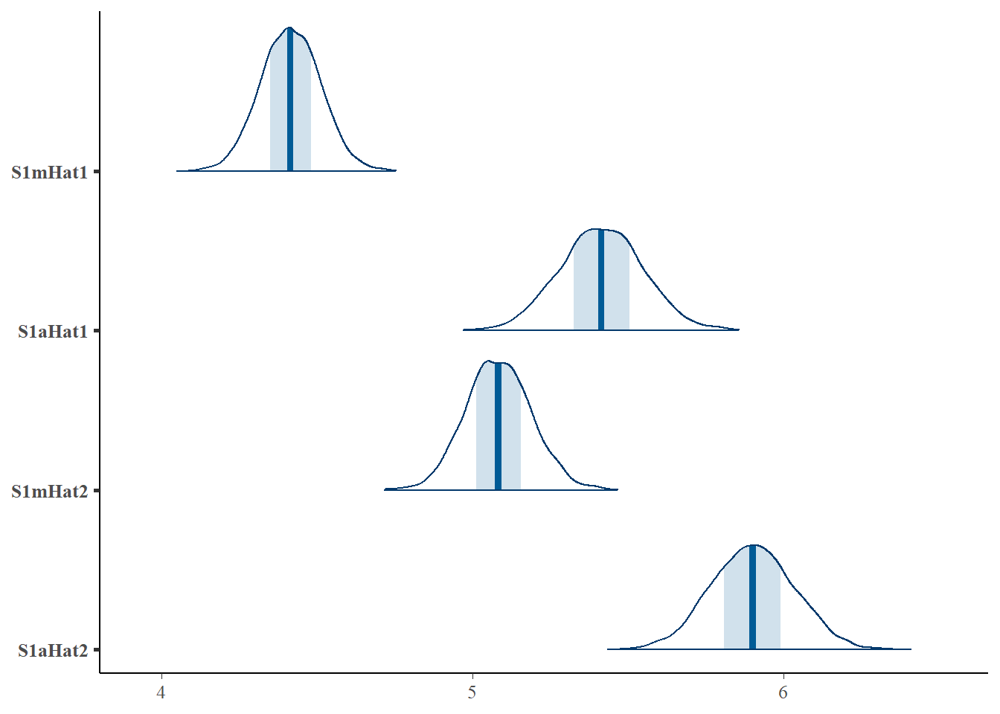
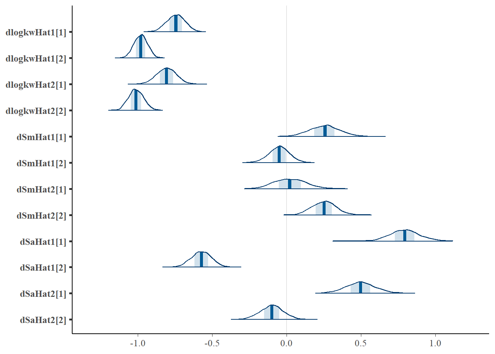

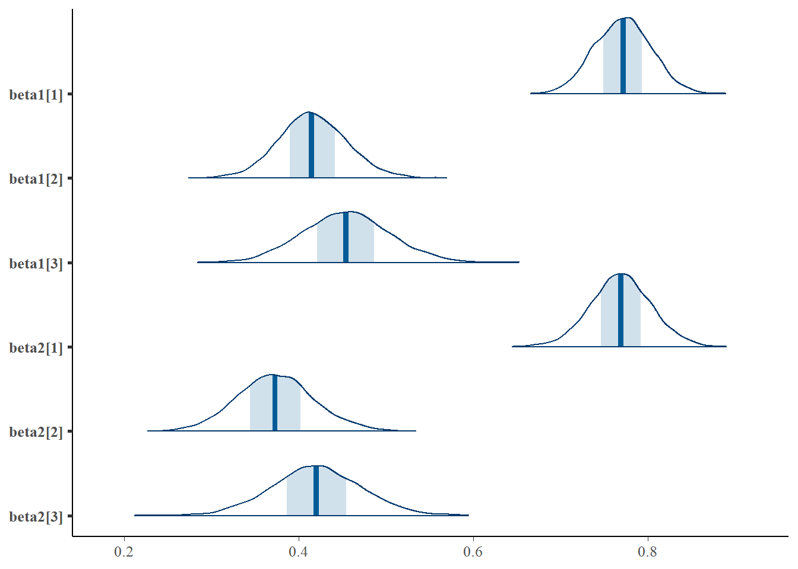
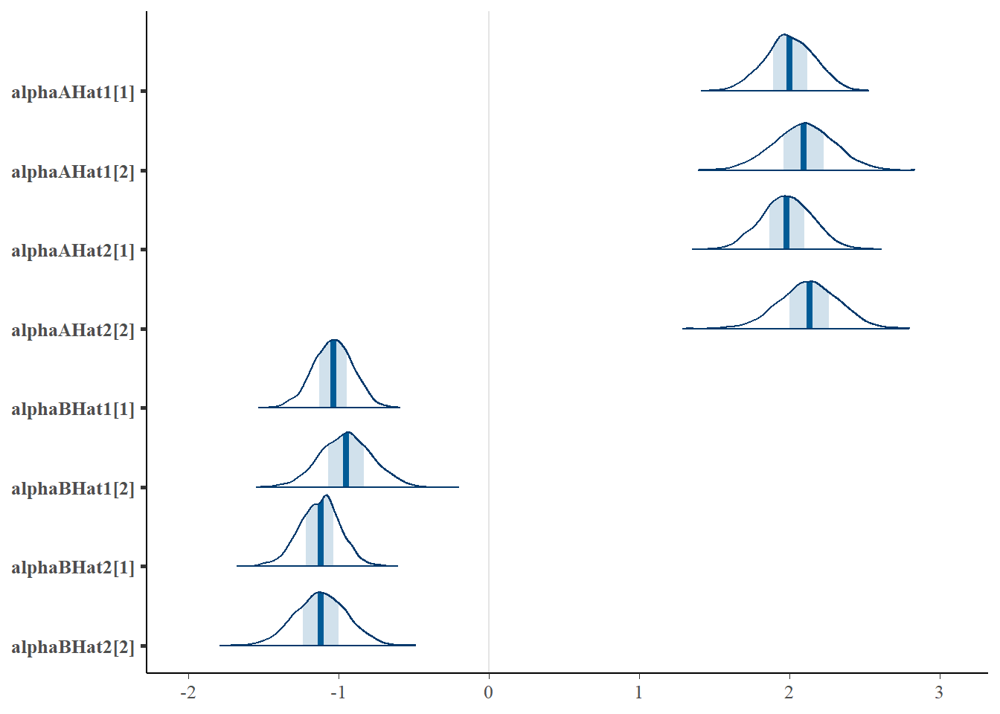
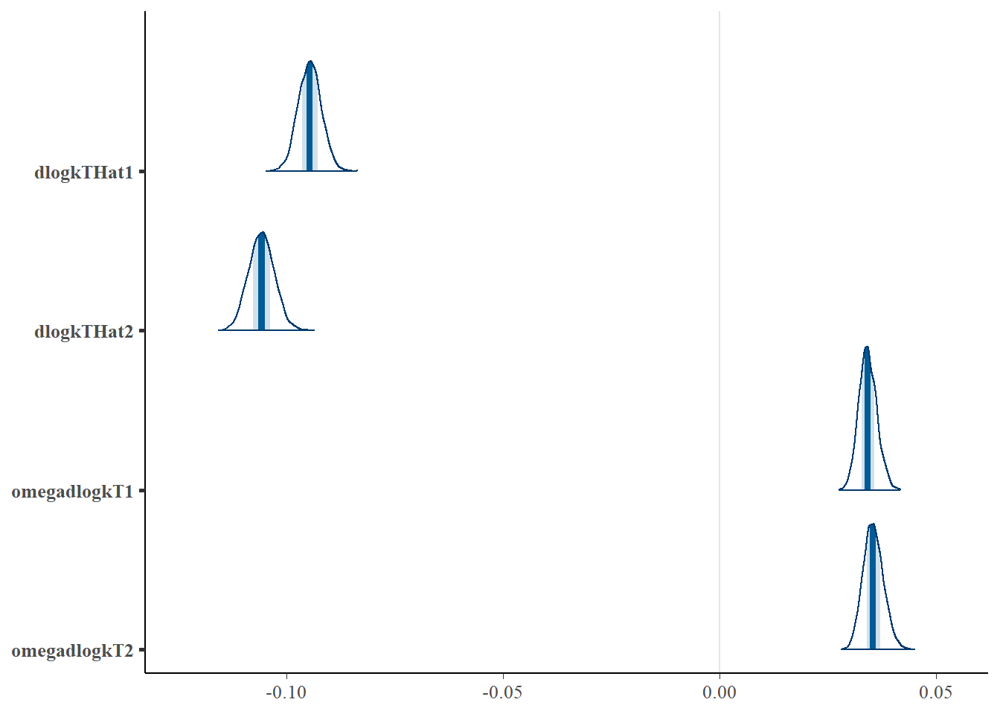
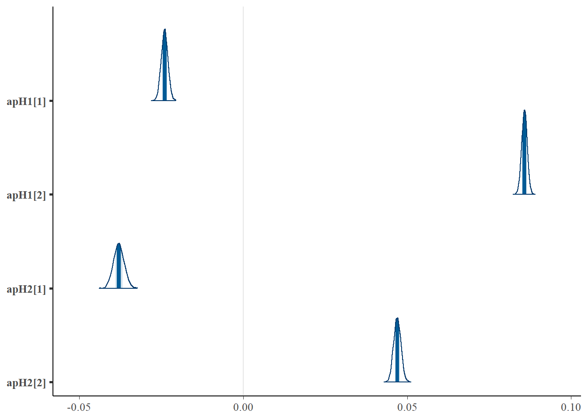
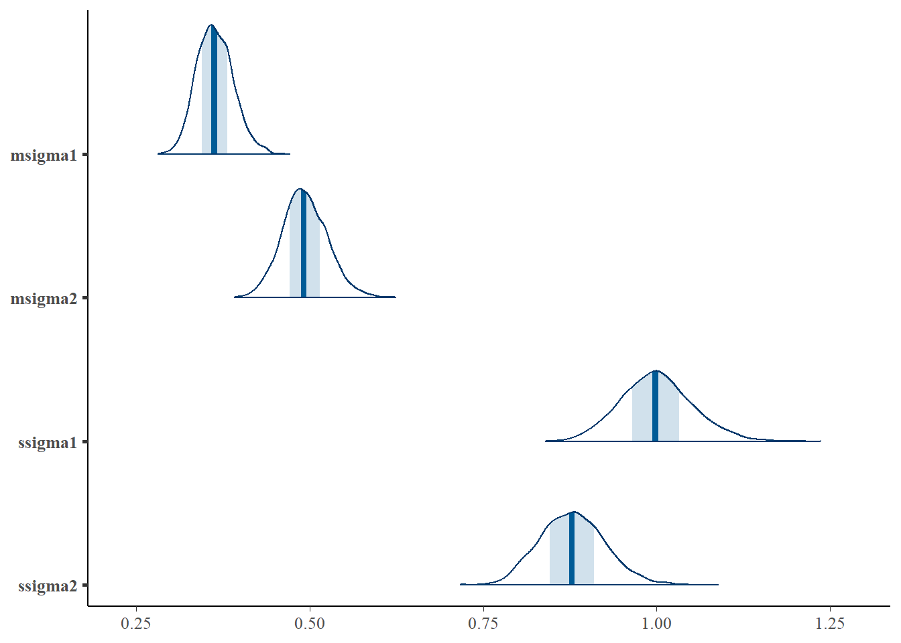
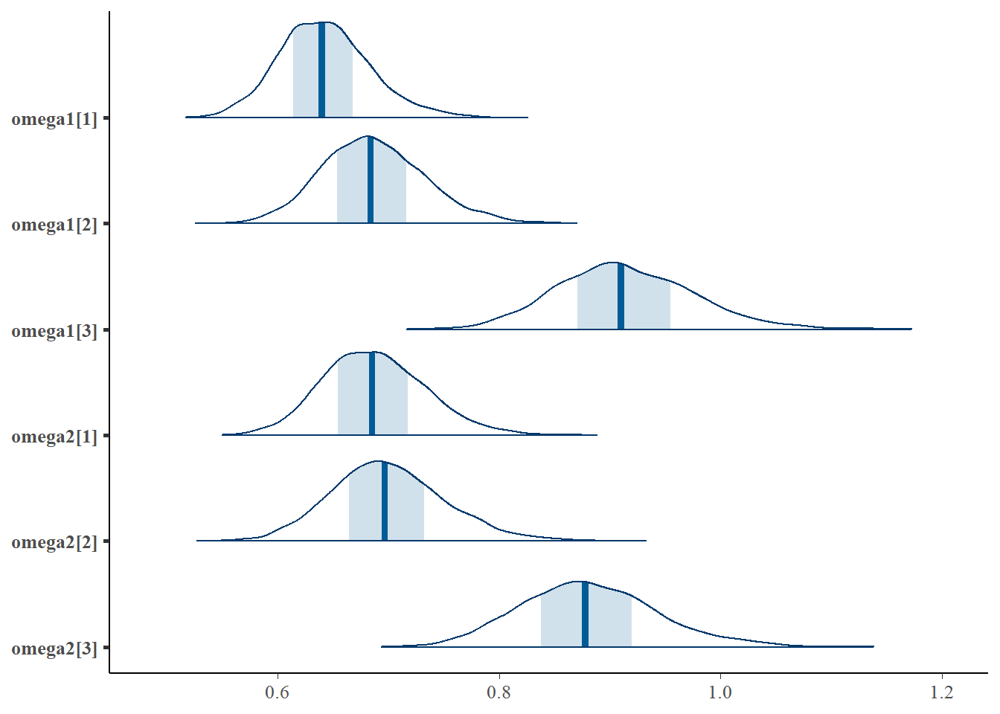
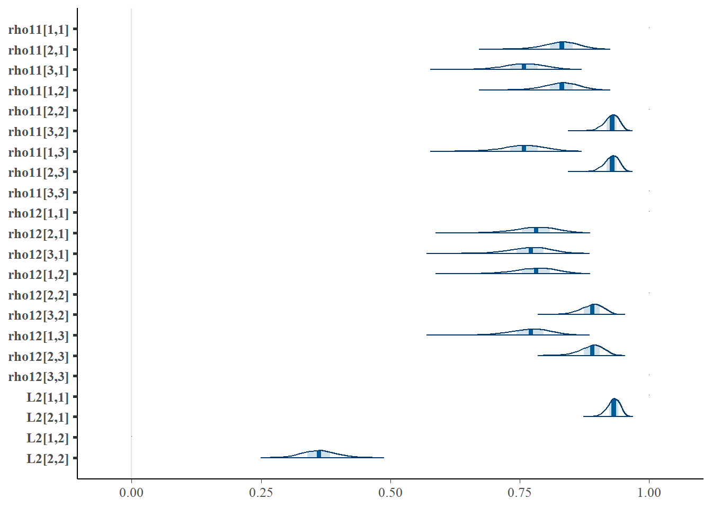
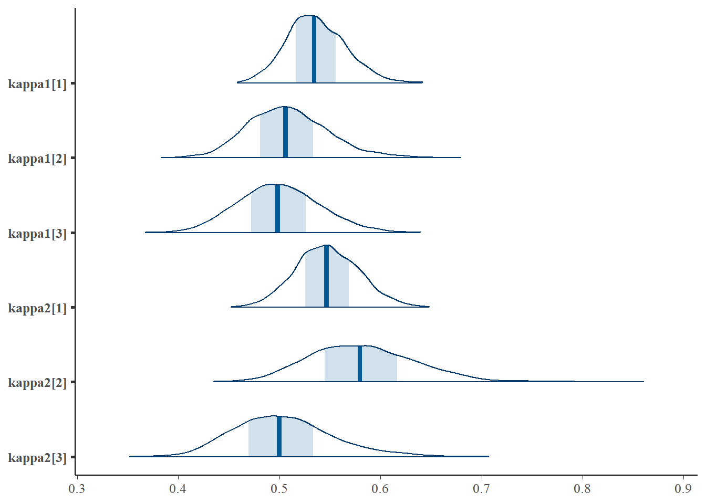
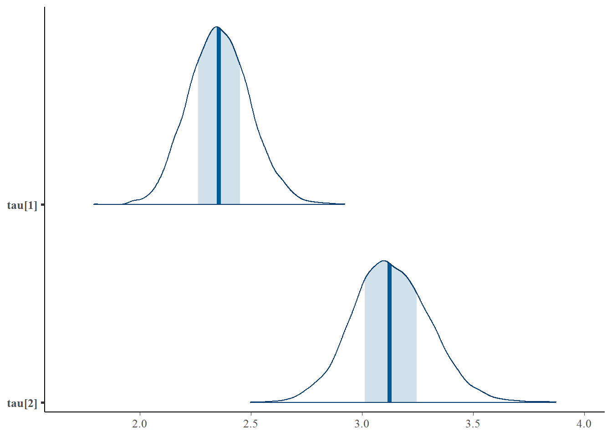